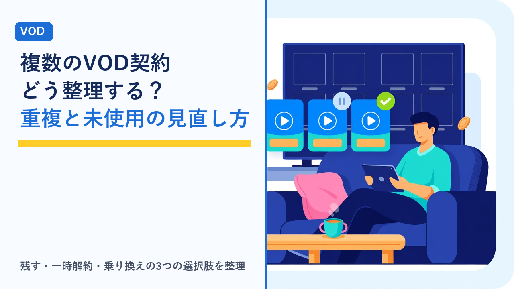

複数のVODを契約しているときの整理術：重複する作品・使っていないサービスの見直し方
更新日：2026-10-22

動画配信サービス（VOD）は1つあたりの月額が数百円〜2,000円程度と手頃なため、「あのドラマが見たくて登録した」「無料体験から継続になっていた」と重なっていくうちに、気づけば3つ、4つと契約していることがあります。1つずつは小さくても、合計すると月に数千円、年間では数万円の固定費になり、しかもほとんど開いていないサービスが混ざっていることも珍しくありません。この記事では、複数のVODを契約している人が、何を基準に「残す」「やめる」「入れ替える」を判断すればよいかを客観的に整理します。特定のサービスをすすめるものではなく、見直しの手順と確認したい項目を扱います。
まず「何を契約しているか」を洗い出す
見直しの最初のつまずきは、自分が何を契約しているかを正確に把握していないことです。VODは登録の入り口が多く（公式サイト、アプリ内課金、通信キャリアのオプション、クレジットカードの特典など）、サービスの公式サイトを見ただけでは全体が分かりません。次の順で洗い出すと漏れが減ります。
- クレジットカード・銀行の明細を3か月分見る：毎月同じ金額が引き落とされている項目を拾います。月額が変わらないサービスは、1か月分だけでは見落とすことがあるため複数月を見ます。
- スマホのアプリ内課金（サブスクリプション）の一覧を見る：iPhoneの「サブスクリプション」、Androidの「定期購入」の画面に、アプリ経由で契約したものが並びます。公式サイト経由とは別の請求になります。
- 通信キャリア・プロバイダのオプションを見る：スマホ料金にまとめて請求されているVODは、通信事業者のマイページの「オプション」や「コンテンツ」の欄に出ます。
- カード・ポイントサービスの特典を見る：カードの特典として付いているサービスは「無料」に見えても、特典期間が終わると有料に切り替わるものがあります。
洗い出したら、「サービス名・月額・課金日・登録経路（どこから契約したか）・最後に見た作品」を1枚のメモにまとめます。この表が、後の判断の土台になります。
月額の合計を「年間」に直して見る
VODを個別に見ると「月990円」「月1,026円」と小さく感じますが、合計を年間に直すと判断の感覚が変わります。たとえば月額合計が3,500円なら年間42,000円、5,000円なら年間60,000円です。年払いやキャリア決済、ポイント還元を含めた実質負担の考え方はVODの月額料金を年間で比べるで整理しています。
年間の金額を出したうえで、「この金額で本当に見ている作品の数は何本か」「1本あたりいくら払っていることになるか」を計算すると、残すべきサービスとそうでないサービスの差がはっきりします。
「見たい作品がどこにあるか」で重複を調べる
複数契約でよくあるのが、同じ作品が2つ以上のサービスで見放題になっている状態です。配信権は作品ごと・期間ごとに決まるため、人気作ほど複数サービスに並ぶ傾向があります。逆に、特定のサービスでしか配信していない独占作品（オリジナル作品や独占配信）は、そのサービスを残す理由になります。
- 「次に見たい作品」を5〜10本書き出す：いま契約しているサービスの作品一覧を眺めるのではなく、先に見たい作品を決めてから、どこで配信されているかを調べます。
- 横断検索サイトや各サービスの検索で配信先を確認する：作品名で検索すると、見放題・レンタル・配信なしがサービスごとに分かります。見放題かレンタルかの違いはVODの「見放題」と「レンタル」「購入」の違いをご覧ください。
- 「このサービスでしか見られない作品」に印を付ける：独占作品がゼロで、見たい作品がすべて他のサービスでも見られるなら、そのサービスは重複している可能性が高いといえます。
- ジャンルの偏りを見る：アニメ、海外ドラマ、スポーツなどジャンルによって強いサービスは異なります。自分がよく見るジャンルに強い1つを軸に据えると、残りの判断が楽になります。ジャンル別の傾向はアニメ向け、海外・韓国ドラマ向け、スポーツ向けの記事で整理しています。
「使っていないサービス」を見分ける目安
「使っているつもり」と「実際に使っている」はずれやすいため、感覚ではなく記録で判断します。
- 視聴履歴の最終日：多くのサービスには視聴履歴や「視聴中」の一覧があります。最後に見た日が2〜3か月以上前なら、使っていないサービスの候補です。
- マイリスト（お気に入り）に未視聴が溜まっているか：「いつか見る」が溜まっているだけで実際に再生していないなら、契約を続ける理由としては弱いといえます。
- アプリの利用時間：スマホの「スクリーンタイム」や「利用時間」で、VODアプリごとの使用時間を見ると、客観的な数字が出ます。
- 家族の利用：自分は使っていなくても家族が使っている場合があります。複数人で使っているなら、同時視聴数やプロフィール機能も含めて判断します。家族での使い方は動画配信サービスの家族アカウント・同時視聴ルールまとめで整理しています。
「残す」「一時解約」「乗り換え」の3つの選択肢
見直しの結果は、「すべて解約」か「全部残す」の二択ではありません。サービスごとに次の3つのどれかに振り分けると、無理なく整理できます。
| 選択肢 | 向いているサービス | メリット | 注意点 |
|---|---|---|---|
| 残す | 独占作品が多い、毎週見る番組がある、家族も使っている | いつでも見られる、視聴履歴やマイリストが維持される | 年間の金額を把握したうえで「残す価値があるか」を定期的に見直す |
| 一時解約（見たいときだけ再契約） | 見たい作品が特定の時期に集中する、シーズン制のドラマやスポーツ中心 | 見ない月の料金を払わずに済む、再契約が比較的簡単なサービスが多い | 再契約時は無料体験が使えないことが多い、履歴やダウンロード作品が消える場合がある |
| 乗り換え（別のサービスに置き換える） | 見たい作品のほとんどが別の1サービスでも見られる、料金や機能で他に有利なものがある | 月額の合計を減らしつつ見たい作品は確保できる | 乗り換え先の配信期間・画質・同時視聴数を事前に確認する必要がある |
「一時解約」は、解約しても再登録ができることを前提にした使い方です。再登録時の無料体験の扱いや、解約後のデータの保持期間はサービスによって異なります。詳しくはVODの無料体験を「はしご」する前に知っておきたい再登録・再体験のルールをご覧ください。
解約する前に確認したいこと
「やめる」と決めたサービスでも、解約のタイミングと手順を間違えると損をすることがあります。次の点を確認してから手続きします。
- 課金日（更新日）：多くのサービスは月の途中で解約しても日割り返金はなく、次の課金日の前日まで見られる仕組みです。課金日の直前に解約すると、無駄なく使い切れます。逆に課金日を過ぎてから解約すると、1か月分がそのまま発生します。
- 解約の入り口：公式サイトで登録したものは公式サイト、アプリ内課金で登録したものはスマホのサブスクリプション画面、キャリア経由はキャリアのマイページというように、登録した経路と同じ場所でしか解約できないのが一般的です。アプリを削除しただけでは解約になりません。
- ダウンロード済みの作品：解約すると、端末にダウンロードした作品も再生できなくなります。見終えてから解約します。
- 貯まっているポイント・コイン：レンタル用のポイントが付与されるサービスでは、解約でポイントが失効することがあります。使い切ってから手続きします。
- 年払い・セット契約の縛り：年払いプランや、通信回線とのセット割で契約している場合、途中解約の扱いや割引の消滅があります。契約条件を先に確認します。
- 解約完了の確認：手続き後に届く完了メールや、マイページの契約状態が「解約済み」になっているかを確認します。解約忘れを防ぐコツはVODサービスの解約忘れを防ぐコツと注意点まとめで整理しています。
季節や作品に合わせて「入れ替える」使い方
整理した結果を長く保つには、「常時契約する軸のサービスを1〜2つに絞り、残りは見たい作品があるときだけ契約する」という考え方が現実的です。
- 軸のサービス：自分がよく見るジャンルに強く、独占作品や毎週見る番組があるもの。ここは年間契約や年払いで割安にする選択肢もあります。
- スポット契約のサービス：新シーズンの配信やスポーツ大会の期間だけ契約し、終わったら解約する。契約した月に「解約予定日」をカレンダーに入れておくと、放置を防げます。
- 見直しの頻度：3か月に1回、または課金日の前に「先月、このサービスで何を見たか」を振り返る習慣を作ると、使っていないサービスが残りにくくなります。
入れ替えを前提にするなら、再契約のしやすさ（登録の手間、再体験の可否）や、解約後に視聴履歴やマイリストがどれだけ残るかも、サービスを比べる観点に入れておくと便利です。
選び方のポイント
- 「作品」を起点に判断する：サービスの知名度や月額の安さではなく、見たい作品がどこにあるかで残すものを決めると、重複が自然に減ります。
- 独占作品の有無を重視する：他で見られない作品があるサービスは残す理由が明確です。逆に、ラインナップが他と重なる割合が高いサービスから見直します。
- 年間の合計金額で考える：月額の合計を12倍した数字を見て、「その金額を払う価値があるか」をサービスごとではなく全体で判断します。
- 解約と再契約の手間を比べる：一時解約で運用するなら、再登録が簡単で、履歴やマイリストが残るサービスのほうが入れ替えやすくなります。
- 家族の使い方も含める：自分が使っていなくても家族が使っているなら、同時視聴数やプロフィール数を含めて「世帯として必要か」で判断します。
- 見直しの日をあらかじめ決める：課金日の直前や3か月ごとなど、振り返るタイミングを固定しておくと、「気づいたら1年払っていた」という状態を防げます。
よくある質問
いくつ契約していれば「多すぎる」といえますか？
数そのものに正解はなく、「毎月実際に見ているか」で判断するのが現実的です。目安としては、直近2〜3か月で一度も再生していないサービスがあれば、それは数に関係なく見直しの対象になります。逆に、3つ契約していてもそれぞれで毎週見る作品があるなら、無駄とはいえません。月額の合計を年間に直し、見ている作品数と比べてみると判断しやすくなります。
解約すると、視聴履歴やマイリストは消えてしまいますか？
サービスによって異なります。アカウント自体を残して有料プランだけを解約する方式のサービスでは、一定期間は履歴やマイリストが保持され、再契約すると引き続き使えることが多いです。一方、アカウントごと退会する方式や、保持期間を過ぎた場合は消えることがあります。一時解約を前提にするなら、解約前に各サービスのヘルプで「解約後のデータの扱い」を確認し、見たい作品のメモを別に残しておくと安心です。
同じ作品が複数のサービスにあるとき、どちらで見るべきですか？
見放題の範囲なら、どちらで見ても追加料金はかかりません。画質や字幕・吹き替えの対応、ダウンロードの可否、同時視聴数など機能面で差があることがあるため、自分の見る環境に合うほうを選びます。見直しの観点では、「その作品のためだけに契約しているサービス」があれば、もう一方で見られる以上、そちらを解約の候補にできます。配信期間は作品ごとに終了することがあるため、見る前に配信終了日も確認しておくと確実です。